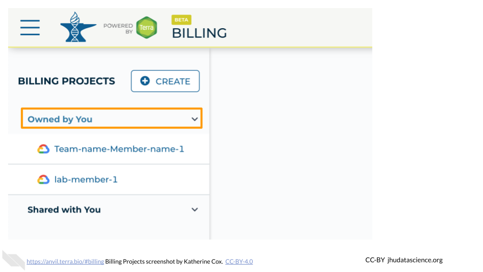
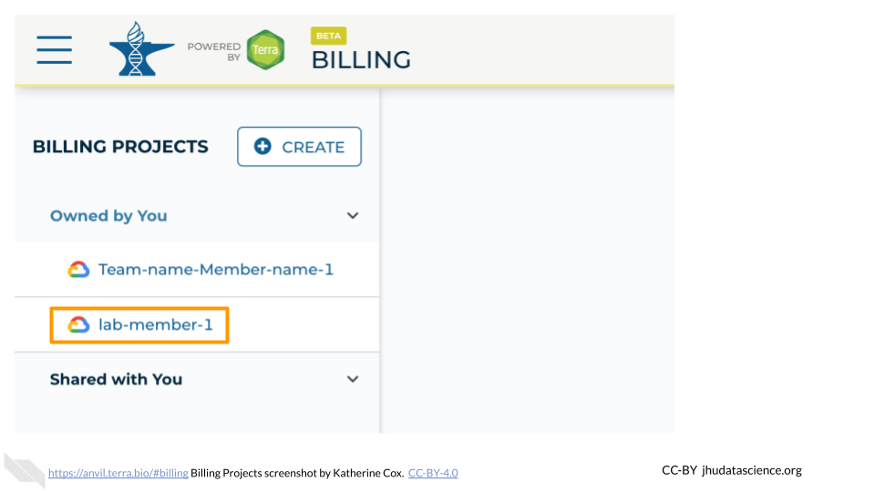
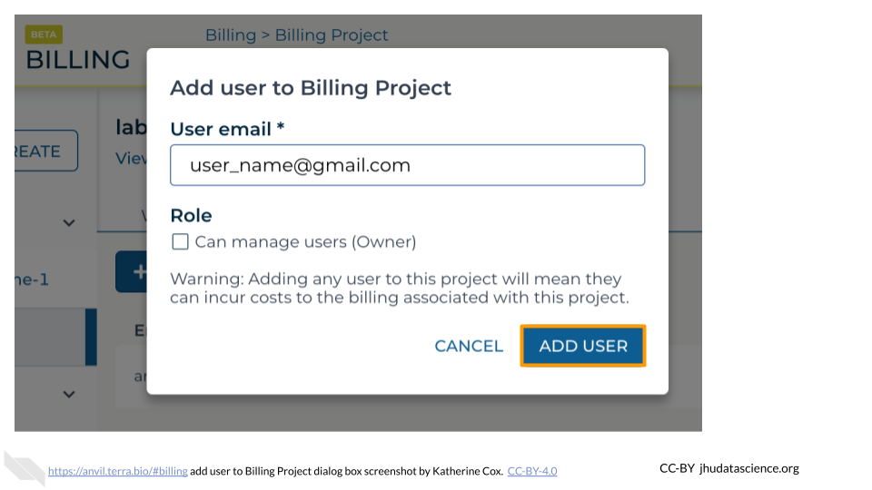
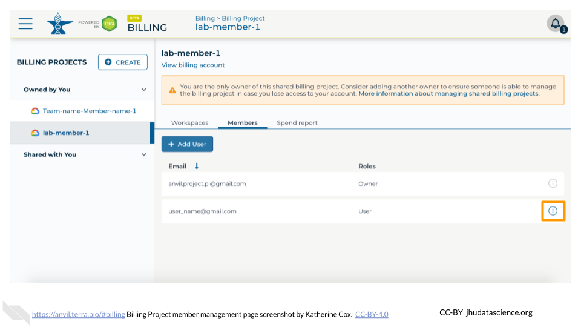

Chapter 6 Set up Terra Billing Projects
Terra Billing Projects are how you grant people (including yourself!) permission to compute on AnVIL. By adding someone to your Billing Project, you enable them to use your funding to carry out activities on AnVIL.
Depending on how you are being funded, this may be taken care of for you. If your funding is being managed by a third party (e.g. through a funding mechanism such as STRIDES, or through your institution), contact them to determine whether you should create Terra Billing Projects yourself.
The first set of instructions below walk you through creating a Terra Billing Project. If someone else has provided a billing project, you can skip down to adding instructors to Billing Project.
6.1 Create Terra Billing Projects
To create a Billing Project, you need access to a Google Billing Account.
- If you set up Google Billing yourself, you’re good to go! Just make sure to use the same Google Account when logging in to Terra.
- If a third party is handling Google Billing, you likely do not need to log in to Google Billing yourself; you should be able to follow the instructions below to create a Billing Project within Terra. If you run into trouble, check with your funding manager to confirm:
- They have set up a Google Billing Account
- They have added you to the Account as a “User” (or higher)
- You are using the correct Google ID (i.e. email address) to log in to Terra
- They have not already created a Billing Project for you
It’s often beneficial to set up two separate Billing Projects for a course:
- Instructor/TA - used to fund development and testing of the material. It can persist for multiple sessions of the course.
- Student - funds all student activity, and is deactivated at the end of the course activities.
Having separate Billing Projects is not required, but can make management easier, particularly when it comes to shutting things down.
Note: Terra Billing Projects need unique names. One option is to use a combination of institution-class-term (e.g. jhu-bio101-2022SP).
To create a Terra Billing Project:
Launch Terra and sign in with your Google account. If this is your first time logging in to Terra, you will need to accept the Terms of Service.
In the drop-down menu on the left, navigate to “Billing”. Click the triple bar in the top left corner to access the menu. Click the arrow next to your name to expand the menu, then click “Billing”. You can also navigate there directly with this link: https://anvil.terra.bio/#billing
 the \"hamburger\" button for extending the drop-down menu, 2) the arrow next to your username, for extending the drop-down submenu, and 3) the submenu item \"Billing\".")
On the Billing page, click the “+ CREATE” button to create a new Billing Project. If prompted, select the Google account to use. If prompted, give Terra permission to manage Google Cloud Platform billing accounts.

Enter a unique name for your Terra Billing Project and select the appropriate Google Billing Account. The name of the Terra Billing Project must:
- Only contain lowercase letters, numbers and hyphens
- Start with a lowercase letter
- Not end with a hyphen
- Be between 6 and 30 characters

Select the Google Billing Account to use. All activities conducted under your new Terra Billing Project will charge to this Google Billing Account. If prompted, give Terra permission to manage Google Cloud Platform billing accounts.

Click “CREATE BILLING PROJECT”.

Your new Billing Project should now show up in the list of Billing Projects Owned by You. You can add additional members or can modify or deactivate the Billing Project at any time by clicking on its name in this list.

The page doesn’t always update as soon as the Billing Project is created. If it’s been a couple of minutes and you don’t see a change, try refreshing the page.
6.2 Add Instructors to Billing Project
Adding someone to a Billing Project enables them to compute on AnVIL, funded by the Billing Project.
To add members to a Billing Project, you must be an “Owner” of the Billing Project.
- If you created the Billing Project yourself, you’re good to go!
- If a third party created the Billing Project, check to see whether you are an Owner or a User. If you are not an Owner, you will need to contact your funding manager. They can either make you an Owner, or can add other team members to the Billing Project themselves.
You can add individual users to a Billing Project, or you can add a Terra Group, which will enable everyone in the Group to charge to the Billing Project.
- To add an individual user, you will need to know the email address they will be using to access AnVIL.
- To add a Group, you will need the email address associated with the Group.
6.2.1 Find Group email
If you want to add a Terra Group (such as your “instructor” Group) to your Billing Project, you can find the Group email address on the Group Managment page:
Launch Terra and sign in with your Google account.
In the drop-down menu on the left, navigate to “Groups”. Click the triple bar in the top left corner to access the menu. Click the arrow next to your name to expand the menu, then click “Groups”. You can also navigate there directly with this link: https://anvil.terra.bio/#groups
 the \"hamburger\" button for extending the drop-down menu, 2) the arrow next to your username, for extending the drop-down submenu, and 3) the submenu item \"Groups\".")
Find the name of the Group, then look in the “Group Email” column to find the email address associated with the Group. Copy this email address and paste it in as the username when adding people to Billing Projects and Workspaces. This will grant everyone in the Group access to the Billing Project or Workspace.

Now that you have the Group email address, you can add the group to your Billing Project.
6.2.2 Add members to Billing Project
Users can be added to a Billing Project as either Owners or Users. Owners can add and remove users from the Billing Project (including other Owners!). This means Billing Project Owners have a great deal of power over how money can be spent.
It’s often a good idea to have at least one other Owner of a Billing Project in order to avoid getting locked out, in case the original Owner leaves or loses access to their account. But you should exercise caution when selecing Billing Project Owners.
When teaching with a team, it may make sense to add only those most comfortable with Terra and/or most involved in Terra administration as Owners, and to add everyone else as Users. This can be done by adding the Owners individually as Owners, and then adding the Instructor Group as User.
Launch Terra and sign in with your Google account.
In the drop-down menu on the left, navigate to “Billing”. Click the triple bar in the top left corner to access the menu. Click the arrow next to your name to expand the menu, then click “Billing”. You can also navigate there directly with this link: https://anvil.terra.bio/#billing
 the \"hamburger\" button for extending the drop-down menu, 2) the arrow next to your username, for extending the drop-down submenu, and 3) the submenu item \"Billing\".")
Click “Owned by You” and find the Billing Project. If you do not see the Billing Project in this list, then you are not an Owner and do not have permission to add members.

Click on the name of the Billing Project.

Click on the “Members” tab to view and manage members. Then click the “Add User” button.

Enter the email address of the user or group you’d like to add the the Billing Project.
- If adding an individual, make sure to enter the account that they use to access AnVIL.
- If adding a Terra Group, use the Group email address, which can be found on the Terra Group management page.

If this user or group will need to add and remove other users of the Billing Project, check the Owner box. Otherwise leave it unchecked.
- It’s often a good idea to have at least one other Owner of a Billing Project in order to avoid getting locked out, in case the original owner leaves or loses access to their account.
\" is highlighed.")
Click “ADD USER”.

You should now see the user or group listed in the Billing Project members, along with the appropriate role. They should now be able to use the Billing Project to fund work on AnVIL.

If you need to remove members or modify their roles, you can do so at any time by clicking the teardrop button next to their name.
